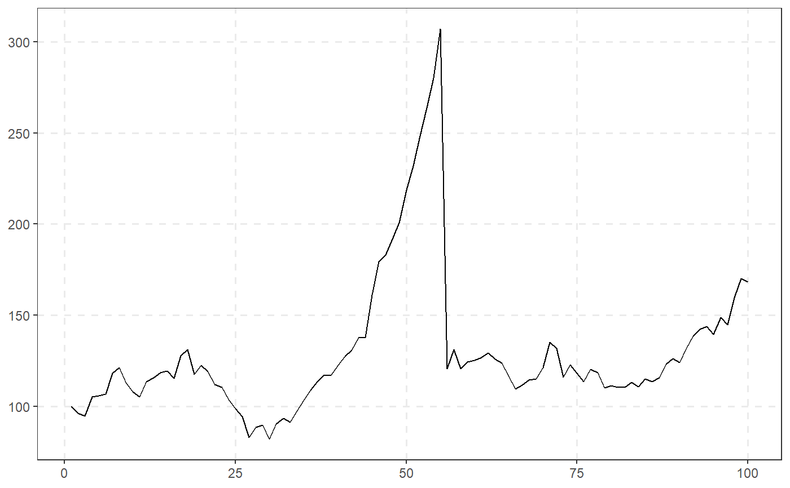
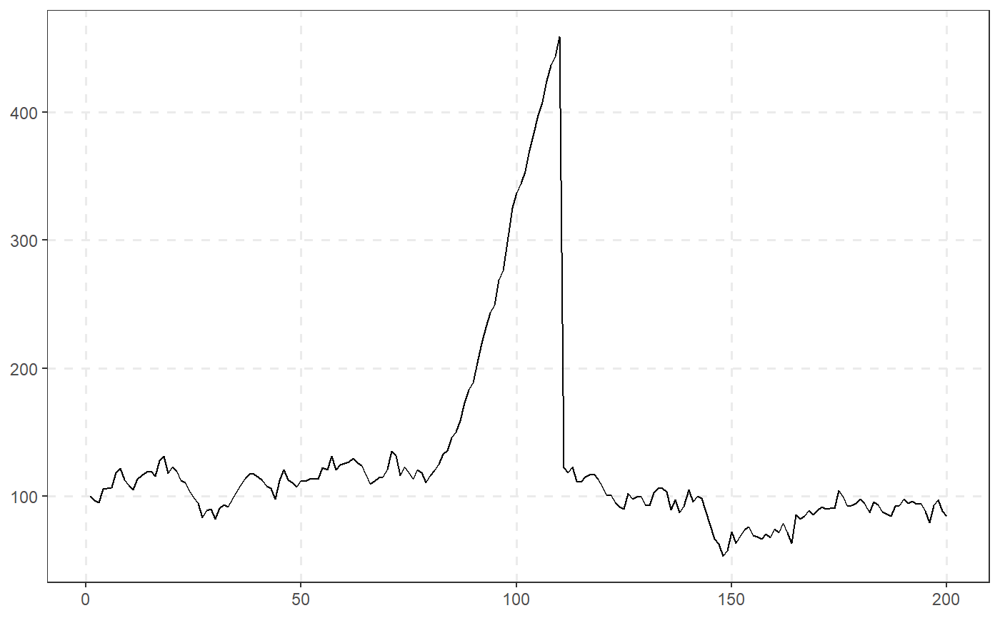
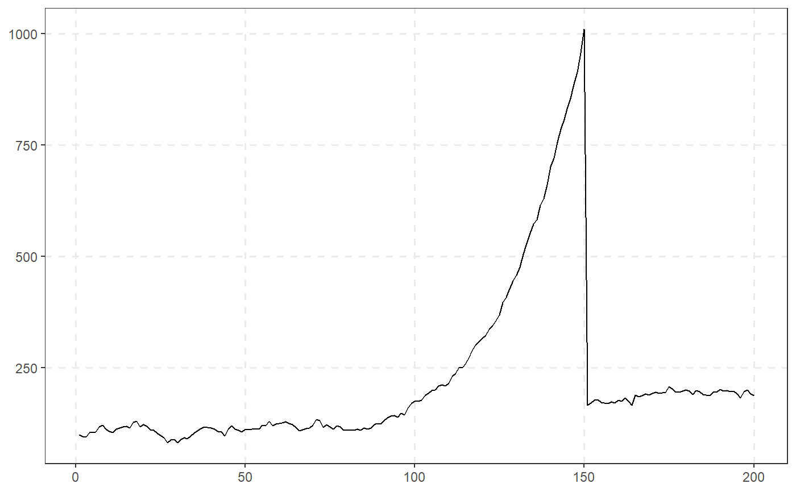

The following function generates a time series which switches from a martingale to a mildly explosive process and then back to a martingale.
sim_psy1( n, te = 0.4 * n, tf = 0.15 * n + te, c = 1, alpha = 0.6, sigma = 6.79, seed = NULL )
| n | A strictly positive integer specifying the length of the simulated output series. |
|---|---|
| te | A scalar in (0, tf) specifying the observation in which the bubble originates. |
| tf | A scalar in (te, n) specifying the observation in which the bubble collapses. |
| c | A positive scalar determining the autoregressive coefficient in the explosive regime. |
| alpha | A positive scalar in (0, 1) determining the value of the expansion rate in the autoregressive coefficient. |
| sigma | A positive scalar indicating the standard deviation of the innovations. |
| seed | An object specifying if and how the random number generator(rng)
should be initialized. Either NULL or an integer will be used in a call to
|
A numeric vector of length n.
The data generating process is described by the following equation: $$X_t = X_{t-1}1\{t < \tau_e\}+ \delta_T X_{t-1}1\{\tau_e \leq t\leq \tau_f\} + \left(\sum_{k=\tau_f+1}^t \epsilon_k + X^*_{\tau_f}\right) 1\{t > \tau_f\} + \epsilon_t 1\{t \leq \tau_f\}$$
where the autoregressive coefficient \(\delta_T\) is given by:
$$\delta_T = 1 + cT^{-a}$$
with \(c>0\), \(\alpha \in (0,1)\), \(\epsilon \sim iid(0, \sigma^2)\) and \(X_{\tau_f} = X_{\tau_e} + X^*\). During the pre- and post- bubble periods, \(N_0 = [1, \tau_e)\), X is a pure random walk process. During the bubble expansion period \(B = [\tau_e, \tau_f]\) is a mildly explosive process with expansion rate given by the autoregressive coefficient \(\delta_T\), and continues its martingale path for the subsequent period \(N_1 = (\tau_f, \tau]\).
For further details the user can refer to Phillips et al. (2015) p. 1054.
Phillips, P. C. B., Shi, S., & Yu, J. (2015). Testing for Multiple Bubbles: Historical Episodes of Exuberance and Collapse in the S&P 500. International Economic Review, 5 6(4), 1043-1078.
# 100 periods with bubble origination date 40 and termination date 55 sim_psy1(n = 100, seed = 123) %>% autoplot()# 200 periods with bubble origination date 80 and termination date 110 sim_psy1(n = 200, seed = 123) %>% autoplot()# 200 periods with bubble origination date 100 and termination date 150 sim_psy1(n = 200, te = 100, tf = 150, seed = 123) %>% autoplot()